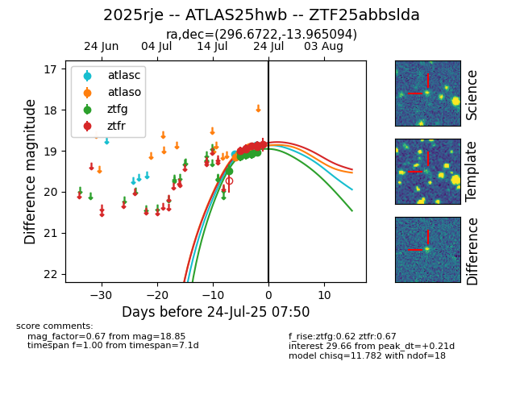

Target ZTF25abbslda at 2025-07-24 07:50, see:
FINK: fink-portal.org/ZTF25abbslda
Lasair: lasair-ztf.lsst.ac.uk/objects/ZTF25abbslda
ALeRCE: alerce.online/object/ZTF25abbslda
TNS: wis-tns.org/object/2025rje
YSE: ziggy.ucolick.org/yse/transient_detail/2025rje
alt names
ZTF25abbslda (ztf,fink)
2025rje (tns,yse)
ATLAS25hwb (atlas)
coordinates:
equatorial (ra, dec) = (296.6722,-13.96509)
galactic (l, b) = (26.3261,-18.43610)
photometry
last atlasc=18.86, atlaso=18.91, ztfg=19.04, ztfr=18.85
3 atlasc, 3 atlaso, 9 ztfg, 7 ztfr detections
